"FLAGELOS E ESPINHOS"
"DA CAMINHADA"
VIVENDO COM TIA CAROLINA
Em Camaiore,
ela mantém o ideal de se entregar totalmente a JESUS, mas o seu trabalho diário era
ajudar a tia na loja, que não lhe oferecia 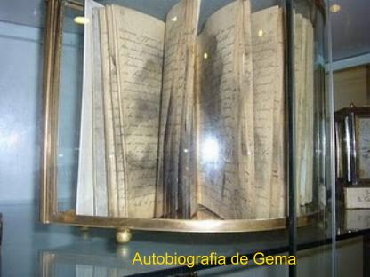
"A tia nos levava a Santa Missa todas as semanas, mas eu comungava raramente, porque não me entendia muito bem com o confessor. Pouco a pouco, comecei a me afastar de JESUS, a descuidar da oração e a gostar das diversões mundanas. Fiquei amiga de uma sobrinha de minha tia, a Rosa Bartelloni, de quem me fiz amiga e companheira de travessuras. A tia nos deixava sair com frequência. Se JESUS não tivesse usado comigo de tanta misericórdia, talvez eu tivesse caído em graves pecados. O amor das coisas mundanas começou a se apoderar de meu coração, mas JESUS veio de novo em meu auxílio".
Atingiu a idade de 20 anos com uma beleza que deixava os rapazes admirados e querendo conquistar o seu amor. Todavia, sentindo a saúde muito frágil e com severas dores nas costas, além do assedio impertinente e diário dos pretendentes, que a cercavam com propostas e promessas, inclusive insistindo junto a sua tia, pedindo para interceder em favor do casamento, ela se decidiu afastar de Camaiore e voltar para Luca, mesmo com o risco de ter que enfrentar a pobreza familiar.
NOVAMENTE EM LUCA
Suas tias de Luca ficaram espantadas com a sua chegada:
- "Gema, você não foi bem tratada"?
- "Fui sim, trataram-me muito bem, mas havia um jovem que queria se casar comigo de qualquer jeito, e eu não quero marido. Desejo apenas ser toda de JESUS".
SÃO CONVOCADOS OS MÉDICOS
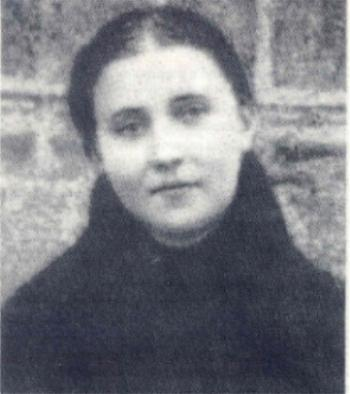
"Que sofrimento para mim quando tinha de me descobrir! Chorava ao ouvir chegar o médico! Os médicos decidiram me operar. Não senti a dor da operação. A minha dor mais profunda e insuportável foi ter de ficar quase despida diante dos médicos. Teria preferido morrer".
Os sofrimentos continuavam intensos, a operação amenizou apenas uma parte do problema. No dia 28 de Janeiro de 1899 a sua saúde declinou mais ainda, com o aparecimento de uma cruel dor de cabeça fruto de uma "otite purulenta". Os médicos percebendo que o tratamento estava sendo inútil a desenganaram, a tuberculose avançava cruelmente. Passaram a visitá-la raramente, só para acompanhar a evolução da enfermidade. A esta altura dos acontecimentos, Gema já não consegue reter nada no estomago. Guido, o seu irmão, vendo que ela caminhava para a morte, marcou consulta com uma junta de médicos para analisar o caso. Eles vieram, examinaram e o diagnóstico foi terrível:
"Dêem-lhe a Santa Unção. Pensamos que não passará desta noite".
Entretanto, os desígnios de DEUS são insondáveis. O SENHOR quer que Gema complete o seu calvário antes de partir para a eternidade.
No dia 8 de Dezembro, Festa da Imaculada Conceição de MARIA, Gema relata em sua "Autobiografia":
"Eu estava muito desanimada, então disse a JESUS que não rezaria mais, se ELE não me curasse. Perguntei-lhe o que queria de mim, mantendo-me naquele estado"?
"O meu Anjo da Guarda, me respondeu":
"Se JESUS te mortifica no corpo é para te purificar cada vez mais no espírito".
Aconteceu uma pequena melhora, mas os sofrimentos eram muito grandes, e os incômodos esgotavam completamente a sua natural paciência. Ela sofria muito.
O PADRE GABRIEL
A Irmã Júlia, uma
de suas antigas professoras, lhe contou em certa ocasião, algumas passagens da vida
de um jovem sacerdote passionista 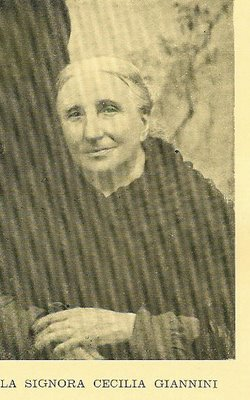
"Peguei o livro
e coloquei embaixo da almofada. Passava do meio dia e me sentia aborrecida, sem motivo.
O demônio percebendo aproximou-se para me tentar, dizendo":"Que se lhe desse ouvido me curaria quando eu quisesse".
"Estive a ponto de ceder.
De repente, lembrei-me do jovem Gabriel e disse ao maligno: Em primeiro lugar
está à alma, e só depois devemos considerar o corpo. O demônio voltou à carga
com nova tentação. Recorri novamente ao jovem Gabriel e fiz o demônio desaparecer.
Recuperei o meu equilíbrio emocional e me benzi, permanecendo unida ao SENHOR.
Naquele mesmo dia comecei a ler o livro da vida dele, e não me cansava de
admirar as suas virtudes. Não tinha terminado a leitura, quando a senhora
Cecília que tinha me emprestado o livro, veio buscá-lo. Percebendo que ainda
eu queria ficar com ele, deixou-o comigo por mais alguns dias. Finalmente, voltou
no dia marcado e levou o livro. Eu fiquei chorando. Na noite daquele dia, Gabriel
me apareceu: primeiro vestido de branco, mas não o reconhecendo, ele voltou
depois vestido de passionista. Reconheci-o perfeitamente. Ele me disse:
"Percebes
como foi agradável ao SENHOR o teu sacrifício? Eu mesmo te vim visitar. Continua
a ser boa e voltarei".
"Dois meses depois,
eu gozava de uma paz completa. Adormeci tranquilamente. Ao acordar, vi Gabriel aos
meus pés, que me disse": -
"Gema, faz voto de te tornares religiosa". - "Por
quê? Perguntei-lhe. Ele esboçou um sorriso, olhou fixamente para mim e colocou
no meu peito o emblema passionista, dizendo:
"Minha irmã", e desapareceu". AINDA SOBRE A DOENÇA
E desse modo, com fé
e perseverança, apesar de seus sofrimentos, Gema foi vencendo todas as tentativas
e insinuações de satanás. Ela descreve ainda sobre
a sua doença: "No dia
1º de Março, comunguei logo cedo, passando momentos inolvidáveis com JESUS
Eucarístico. ELE então me perguntou: Queres
curar-te? A minha emoção foi tão grande que
não ousei responder. Como JESUS é bom! A graça me foi concedida! Fiquei
completamente curada"! No mesmo dia, Gema
já se levantou sozinha e dentro de casa foi se encontrar com as tias. As pessoas de
casa choraram de alegria. Ela também estava muito feliz, "não pela recuperação da saúde, mas porque JESUS me
tinha escolhido para sua filha". As tias Elisa e Helena
compreenderam o extraordinário Milagre que JESUS tinha feito na sobrinha e por
isso, divulgaram para os amigos e parentes o fato acontecido. E passaram a
tratá-la como "a Menina do Milagre". Mas, a convalescença não foi
imediata, teve o seu curso normalmente lento. Ela sentia tão grande debilidade
que mal conseguia ficar em pé. DESEJANDO
ENTRAR NO CONVENTO Na segunda quinzena
de Março foi a Igreja para receber a Sagrada Comunhão. As Irmãs da Visitação que a
conheciam e souberam da sua cura, a convidaram a participar de um Retiro Espiritual
no Convento no mês de Maio, e acrescentou que se fosse o seu desejo, ela seria
admitida ao Noviciado. Monsenhor Volpi (Confessor dela) concordou e ela se
inscreveu para o Retiro. Na Quarta-feira
Santa, já com a saúde recuperada, faz a sua confissão geral, como escreveu:
"JESUS
concedeu-me uma grande dor pelos meus pecados: na tarde da Quinta-feira Santa
comecei a fazer a Hora Santa. Era a primeira vez que fazia este
sagrado exercício espiritual após a doença. Já cansada de estar de joelhos, sentei-me
por um momento. Senti que as forças iam-me faltando pouco a pouco. Mal tive tempo de
chegar a casa e fechar a porta. Mal entrei no quarto, JESUS apareceu diante de
mim derramando sangue por todos os lados. Baixei os olhos porque aquela visão me
perturbava". - "Minha
filha", disse JESUS,
"estas chagas foste tu que as abriste
com os teus pecados, mas agora as fechaste com tua dor. Ama-ME como EU sempre te amei.
Ama-ME"! "As
chagas do SENHOR ficaram gravadas em mim tão indelevelmente, que nunca mais se
apagaram. Na Sexta-feira, JESUS dirigiu-se a mim de um modo sensível":
- "Estou
prestes a ME unir a ti. Apressa-te, vêm todas as manhãs. Mas toma consciência de
que EU sou um PAI e um Esposo zeloso. Não quererás tu também ser uma esposa
fiel"?
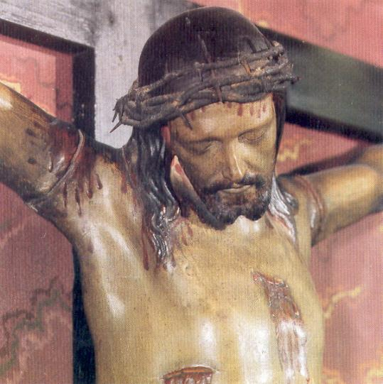
Com este estado de espírito, Gema se preparou para o Retiro espiritual. Os médicos a mandaram usar um corpete ortopédico para proteger a coluna. Ela levou o corpete, mas isto não a preocupava, porque o seu pensamento estava voltado para coisas mais sublimes.
Dia 1º de Maio de 1899, entrou no Convento das Irmãs da Visitação para participar do Retiro. Sua fisionomia estava profundamente marcada pela doença, se apresentava quase irreconhecível, não possuía mais aquela beleza nos traços fisionômicos. De sua vasta cabeleira loura restavam apenas um punhado de cabelos escondidos sob um lenço.
Terminado o Retiro, embora tenha ficado mais alguns dias no Convento, o senhor Arcebispo Ghilardi não lhe concedeu a licença para entrar no Noviciado. Ela escreveu em 1901: "Eu estava ainda muito debilitada pela doença e tinha de usar o corpete ortopédico para endireitar a espinha dorsal. A madre superiora mandou tirá-lo. Tirei-o de fato, e já se passaram dois anos que ando sem ele, sentindo-me perfeitamente bem".
As Irmãs da Visitação prometeram admiti-la em Junho, na Festa do Sagrado Coração de JESUS. Mas quando chegou ao Convento, na data combinada, a Madre Superiora havia mudado de idéia e nem apareceu para cumprimentá-la. Foi exigido que ela devia apresentar quatro atestados médicos provando que sua saúde estava bem, e que não possuía mais o bacilo da tuberculose e assim, podia entrar e permanecer junto com as pessoas no Convento. Os médicos se negaram a fornecer os atestados, não quiseram se responsabilizar. Então, ela permaneceu na sua casa.
A VÍTIMA DO SENHOR " AS CHAGAS
DE JESUS 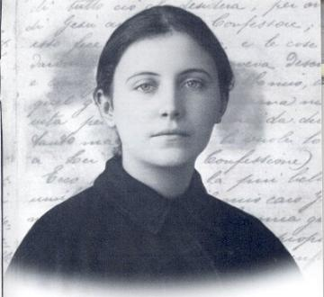
No lar, a existência cotidiana estava muito difícil, porque as tias lutavam contra todas as dificuldades para não faltar o abastecimento, mas os recursos eram muito exíguos. Gema, entretanto, confessa na sua "Autobiografia":
"JESUS não deixava de me consolar com a abundância de suas graças".
A partir desta época, o cenário de sua vida alcançou outro patamar, os "fenômenos extraordinários" passaram a lhe suceder com frequência, sendo eleita a "Vítima de JESUS Crucificado" e para se identificar com JESUS, teve de enfrentar tormentos cruéis, uma terrível luta contra o maligno em sua consciência e a "noite escura" na sua alma.
Na sua "Autobiografia" Gema descreve a sua iniciação como "Vítima do SENHOR":
"No dia 8 de Junho, após a Sagrada Comunhão, JESUS me avisou que neste dia, na parte da tarde, me faria uma grande graça. Eu contei ao meu confessor, e ele me advertiu que estivesse atenta e lhe contasse tudo o que viesse a acontecer. Chegou à tarde. De repente, senti uma forte dor dos meus pecados. A seguir, entrei em profundíssimo recolhimento: a inteligência só via os meus pecados; a memória trazia todos eles a minha lembrança; à vontade os detestava e prometia tudo sofrer para expiá-los... Eu estava em meu quarto. Depois perdi os sentidos e caí ao chão, logo me senti na presença da MÃE CELESTE e de meu Anjo da Guarda, que me mandou recitar o ato de contrição. Mal acabei NOSSA SENHORA me falou":
- "Filha, em nome de JESUS te sejam perdoados os teus pecados. O Meu FILHO te ama muito e quer te conceder uma grande graça. Será capaz de ser digna dela? Eu serei a tua MÃE. E tu serás uma verdadeira filha"?
"Depois Ela estendeu o seu manto e me cobriu com ele. Neste mesmo momento apareceu JESUS. De suas chagas não saíam sangue, mas chamas de fogo que cobriram minhas mãos, meus pés e meu lado. Levantei-me do chão e caminhei para minha cama, e percebi que em mim naqueles locais saíam sangue. A dor das chagas era grande, mas ao invés de me atormentar, enchiam-me de uma paz perfeita".
No dia seguinte, com dificuldade ela foi a Igreja receber a Sagrada Comunhão e para não aparecer às chagas das mãos, colocou luvas escuras. O fenômeno de sangramento das chagas se repetiu todas as semanas, começando a sangrar na tarde de quinta-feira e sangrava até as três horas da tarde de sexta-feira. Palmira Vallentini, que era amiga da família Galgani, vendo Gema com luvas pretas, acabou descobrindo o motivo. Levou a notícia ao Monsenhor Volpi, que mandou um recado para ela: "Não deixe que vejam as tuas mãos, porque as pessoas poderão, talvez, escarnecer de ti".
OS PADRES PASSIONISTAS
Durante o mês de Junho, em companhia de Palmira Vallentini, participou na Igreja dos exercícios espirituais em honra do Sagrado Coração de JESUS. No dia 25 de Junho, na Igreja de São Martinho, começou a missão orientada pelos Padres Passionistas. No dia 9 de Julho, no encerramento da missão, Gema participou e recebeu a Sagrada Comunhão, posteriormente revelando na sua "Autobiografia":
"JESUS se fez presente à minha alma e me perguntou":
- "Gema, gostas do hábito desse sacerdote"? (Passionista)
- "Exclamei: Meu DEUS"!
- "Pois EU te digo que tu serás uma filha predileta do Meu Coração".
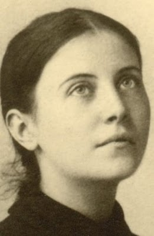
Após o final da missão dos padres, a família Giannini foi passar férias na praia de Viareggio. A senhora Cecília ficou em casa para tomar conta da Farmácia e da Fabrica de Cera dos Giannini, e aproveitou a oportunidade para convidar Gema a ser sua acompanhante durante o dia. A senhora Cecília percebeu nas conversas de Gema com o Padre Caetano, o imenso dom que DEUS tinha derramado sobre aquela menina e por isso quis protegê-la, auxiliando de alguma forma.
O CARINHO DA SENHORA CECÍLIA
E a amizade entre a senhora Cecília e Gema cresceu de tal maneira, que ela vendo a pobreza da família Galgani, quis ajudar mais efetivamente, insistindo para que a jovem ficasse residindo na casa. E assim aconteceu. No inicio Gema ficava durante o dia ajudando à senhora Cecília em tudo, mesmo depois que a família Gianini voltou das férias, e a noite ia dormir na sua casa junto com suas tias e irmãos. Posteriormente, Cecília conversou com seu irmão Mateus Giannini, chefe da casa, e com sua cunhada Justina Bastiani, pedindo para que a jovem fosse acolhida definitivamente pela família Giannini. Ele respondeu: "Nada tenho a opor. Ela será como que a minha undécima filha". E Gema ganhou uma nova família.
Este acontecimento só foi possível, por causa de duas preponderantes realidades: a pobreza da família Galgani e, muito mais importante, a educação extremamente modesta dos irmãos e das tias, que não a respeitavam, e inclusive no inicio, eles achavam que as manifestações que nela se realizavam, eram coisas do organismo ou algum tipo de simulação para despertar piedade. A passagem a seguir da uma idéia da "delicadeza" dos irmãos. Gema estava residindo na casa dos Giannini e foi convidada para o casamento de seu irmão Guido. De presente bordou um tapete, e no dia, calçou as luvas para esconder as chagas e vestiu a sua roupa, um simples e modesto vestido que normalmente usava, e seguiu para a cerimônia acompanhada de sua tia Elisa. Logo que chegou seu irmão zombou da roupa dela:
- "Que elegante! Até usa luvas! Também as usa para comer"?
Ela respondeu: "Deixa-me em paz, por favor! Estou acostumada assim"!
Momentos depois a noiva e cunhada Assunção Brogi, num gesto rápido arrancou-lhe as luvas, aparecendo visivelmente às chagas. Enquanto Gema se protegia ela admirada correu para contar a tia Elisa:
- "Tia, Gema tem chagas como as de JESUS! Ainda não havia percebido isso"?
Respondeu a tia: - "Não! Porque ela está sempre de luvas"...
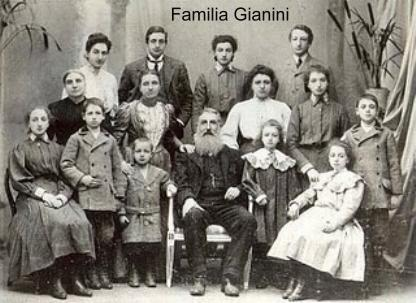
Ao contrário, a família Giannini era muito responsável e soube educar dignamente os seus filhos. Piedosamente acompanhavam as manifestações sobrenaturais que aconteciam com Gema e a protegiam nas dificuldades. A senhora Cecília de fato amava Gema, por ela ser simples, pobre, órfã e, sobretudo por ser a "Vítima de JESUS". Ela teve a oportunidade de presenciar uma quantidade incontável de êxtases e manifestações extraordinárias. Verdadeiramente ela funcionava como um Anjo tutelar da jovem, proporcionando-lhe o calor do lar e um carinho com muito afeto, quase materno.
SEMPRE EXISTIRAM DESCRENTES - TESTEMUNHOS NOTÁVEIS
Entretanto, muita gente continuava a não acreditar nas chagas e nas diversas manifestações sobrenaturais que aconteciam com Gema. O Dr. Pfanner levado pelo Monsenhor Volpi (Confessor da moça) depois de alguns exames e observações superficiais e mal fundamentadas, disse que o caso dela era de histerismo. Então a senhora Cecília lhe perguntou:
- "E este sangue doutor"?
Respondeu o médico: "Os histéricos para mostrar que são autênticos produzem sangue, se cortando com qualquer objeto, faca ou agulha".
- "Mas doutor, ela não fez isto, nós estamos aqui dentro de casa e o senhor a viu antes e depois"!
Gema segue sua vida absolutamente normal, pensando em JESUS a cada momento e sempre ajudando nas tarefas domésticas, com interesse e muita responsabilidade.
Padre Lourenço Agrimonti visitando os Giannini deu testemunho de Gema ter "suado sangue" entre os dias 1º e 7 de Setembro de 1899. Depois, este fato se repetiu diversas vezes. Palmira Vallentini, encontrando Gema em plena rua "com a fronte toda coberta de sangue", disse-lhe:
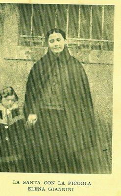
"Gema, já fizeste alguma das tuas! Vem à minha casa para te limpar". Gema, serena e tranquila, a acompanhou docilmente, mas ocultou todas as explicações.A senhora Cecília deu o seguinte testemunho:
"Vendo que o sangue lhe escorria pelo rosto e pelos cabelos, imaginei que o mesmo acontecesse por todo o corpo. Presenciei este fenômeno por três ou quatro vezes. Isto acontecia quando Gema estava de joelhos, rezando em êxtase. Vi também duas grandes lágrimas lhe inundar os olhos. Nessas ocasiões, se percebia facilmente que o seu sofrimento era muito grande".
O Padre Moreschini, passionista e mais tarde Arcebispo de Camerino, escreveu:
"Almocei em casa dos Giannini. Após o almoço, Gema foi ajudar na limpeza da cozinha. Às 14h30min foi para o quarto rezar diante de um crucifixo. Alguns minutos depois, a senhora Cecília me fez um sinal, advertindo-me que Gema estava em êxtase. Vi com os meus próprios olhos como a jovem suava sangue pelo rosto, nariz, boca, mãos e unhas! A cor do rosto era cadavérica, revelando que sofria dores horríveis. Meia hora depois, voltou gradualmente ao seu estado normal. Afastei-me para ela não perceber que eu a estivera observando. Ela voltou à sala e vi que sua cor era normal. Limitei-me a lhe dirigir com naturalidade algumas palavras e retirei-me, despedindo-me dela e da família Giannini".
Apesar da singularidade dos fenômenos que aconteciam, ela não se ensoberbece, continua simples e modesta, sempre se humilhando, se considerando a mais vil e pior das pecadoras.
PADRE GERMANO É CONVIDADO
Desconcertado
e com receio de formar uma opinião errada em tudo que se passava com Gema, Monsenhor
Volpi, Confessor dela, convidou o 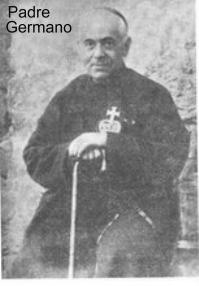
"Gema quando me viu, me reconheceu imediatamente, (algum tempo atrás JESUS tinha proporcionado a Gema uma visão dele) como se já nos conhecêssemos, recebendo-me com sinais de regozijo. Era uma quinta-feira. No meio do jantar, ela pressentindo o êxtase, levantou-se da mesa e tranquilamente retirou-se para o seu quarto. Pouco depois, a senhora Cecília veio me chamar. Vi a jovem rezando em pleno êxtase, suplicando ao SENHOR a conversão de um pecador. Gema não estava agitada, apenas comovida, e dizia":
- "JESUS, uma vez que vieste, quero TE pedir por aquele pecador. Peço que o salve JESUS".
"E disse o nome dele. Tratava-se de um forasteiro a quem eu já tinha admoestado de viva voz e por carta, pedindo-lhe para pôr em ordem a sua consciência, apesar dele ter fama de bom cristão"!
- "JESUS, por que não te compadeces dele? Não me levanto daqui enquanto não me prometeres que o salvará. Ofereço-me como vítima por todos, mas particularmente por este. Concede-me JESUS, esta graça? Lembre-se que é uma alma que tanto TE custou. Por favor, vai buscá-lo e toca-lhe o coração. Submete-o a prova, pelo menos".
- "Parece que o SENHOR lhe deu a entender que aquele pecador já havia extravasado a medida da sua misericórdia. Gema ficou aterrada. Deixou cair os braços e exalou um profundo suspiro. Mas, subitamente se recompôs e voltou a insistir":
- "JESUS, eu sei que ele cometeu muitos pecados, porém mais do que ele cometi eu e, o SENHOR teve compaixão de mim! Quanta caridade o SENHOR teve comigo! Recorda-te JESUS, por isso, eu quero que ele seja salvo. Atenda-me, por caridade! Reconheço que não mereço que me ouças, mas TE apresento o mesmo pedido por intercessão de TUA MÃE. Atreves a dizer NÃO a TUA MÃE? Agora SENHOR, me diz que já salvaste aquele pecador"!
- "De repente, Gema mudou de aspecto e, com ar de indescritível alegria, exclamou":
- "Salvou-se! JESUS venceu! ELE sempre triunfa assim"!
- "Terminado o êxtase, que durou aproximadamente uma hora e meia, retirei-me aos meus aposentos. Pouco depois me chamaram com o seguinte recado": "Padre, um forasteiro procura por ti".
"Falei: deixe-o entrar. Ele lançando-se aos meus pés, me pediu que o confessasse. Era o tal pecador de Gema. Acusou-se de todos os seus pecados. Consolei-o e lhe contei o que se passara momentos antes e lhe pedi autorização para divulgar aquele fato. Abraçamo-nos e ele foi embora".
Padre Germano continuou com suas investigações sobre Gema. Após séria reflexão comunicou seu parecer ao Monsenhor Volpi: "Gema é ouro puro. Mas devemos ser prudentes, e proteger ao máximo a sua humildade e inocência". O Padre Germano também tinha receios que aqueles de pouca fé em Luca, deformassem a realidade que acontecia e aproveitassem para criticá-la. E por isso, recomendava não espalhar aquelas manifestações sobrenaturais.
OS FENÔMENOS EXTRAORDINÁRIOS
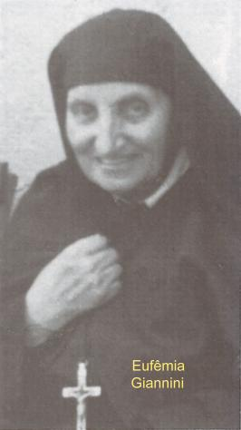
A vida da jovem decorria entre os constantes sofrimentos e o fogo incandescente de seu amor a DEUS. Ela assumiu ser a "Vítima de JESUS" para consolar e acariciar o Coração Divino por causa de todos os pecados da humanidade. Ela sofria e suportava conscientemente a dor, colaborando de maneira heróica, perseverante e fiel, ajudando a completar no Corpo de CRISTO (a Igreja) a redenção da humanidade realizada por JESUS, consolando os sofrimentos de DEUS, pela grandeza de seu amor ao SENHOR.
Os fenômenos extraordinários que aconteciam eram a continuidade de seus sofrimentos físicos e espirituais. Como já mencionamos todas as quintas-feiras às três horas da tarde, as cinco chagas de JESUS que estavam impressas no seu corpo: mãos, pés e no lado, sangravam com muita dor. Nos meses de Fevereiro e Março de 1901, aquele acontecimento foi acompanhado de outro fenômeno: os golpes da flagelação. Algumas testemunhas descrevem o que viram:
"... suas pernas estavam cobertas de chagas, com grandes e profundos cortes"...(Eufêmia Giannini)
"Sentada em um sofá, à pobrezinha tinha as pernas cobertas de chagas até os joelhos"... (Justina Bastiani)
A senhora Cecília testemunhou:
"Certa ocasião, eu verifiquei que Gema estava sofrendo mais do que habitualmente. Sentei-me ao seu lado e fiquei observando. De quando em quando, ela deixava escapar um gemido. Tinha entrado em êxtase. Peguei-lhe na mão e observei o seu braço estava coberto de chagas que sangravam... Eu não entendia o que era aquilo, mas a ouvi murmurar durante o êxtase":
- "JESUS, são os TEUS açoites"?
"Isto aconteceu durante as sextas-feiras do mês de Março de 1901. A flagelação acontecia com chagas cada vez mais profundas".
Em carta datada de 9 de Janeiro de 1901, ela descreve ao Padre Germano a premonição de seu Anjo da Guarda, com relação a sua nova maneira de sofrer:
"Ele trouxe duas formosas coroas: uma de espinhos e outra de lírios. Perguntou-me qual das duas eu preferia? Eu lhe disse: a de JESUS. Então, ele colocou a coroa de espinhos na minha cabeça. Comecei logo a sofrer. Mas era um doce e suave sofrimento, acompanhado de enorme afeto a JESUS e do desejo de sofrer cada vez mais e de voar para junto DELE".
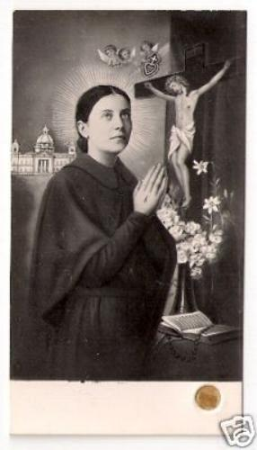
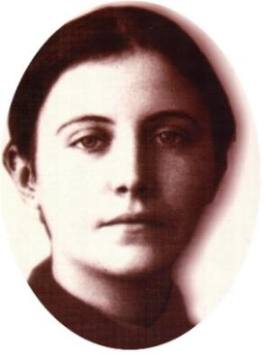

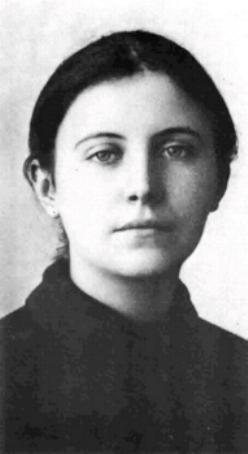
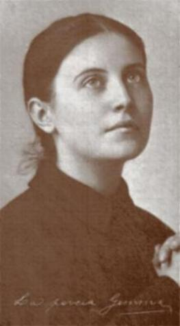
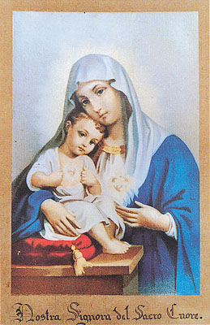
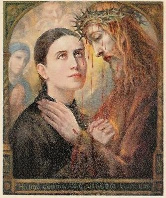
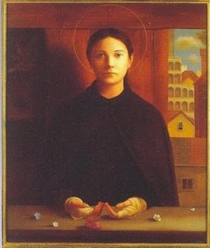